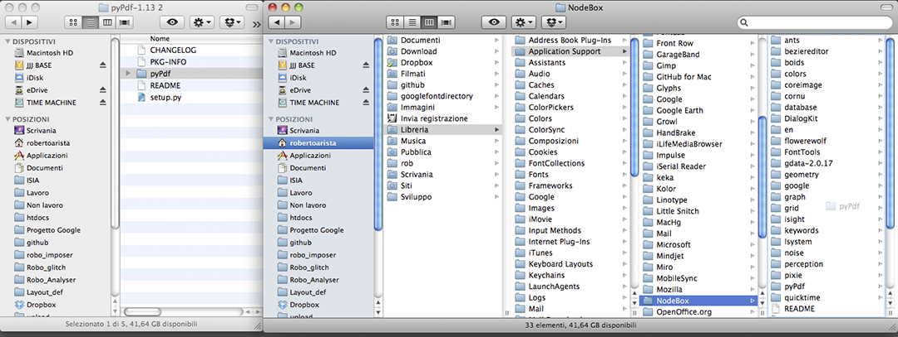
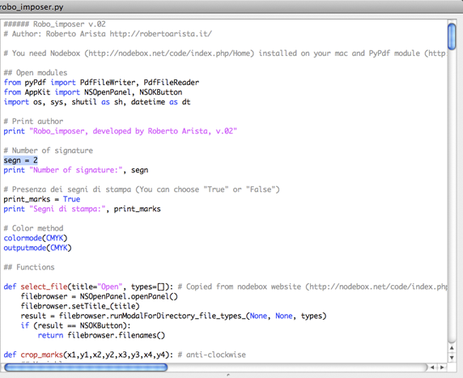
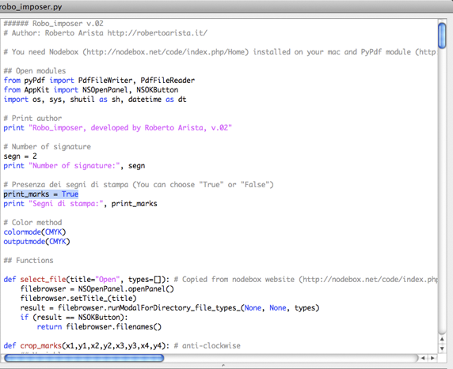

Robo_imposer instructions
-
Install Nodebox
You need Nodebox installed on your Mac. You can download it here
-
Add pyPdf to Nodebox libraries
The module that handle the pdf documents is pyPdf. Download the last package and then copy only the pyPdf folder inside the Nodebox libraries at this path:
/Users/User/Library/Application Support/NodeBox

-
Launch the script
Open robo_imposer.py with Nodebox. You have to choose two things:
- How much signature you desire

- If you need print marks (crop marks, color marks, comment, fold marks, registration marks, color and gray bars) or not

Then press cmd+R and check the result in the output folder (the script creates it automatically at the same level of robo_imposer.py)
-
Enjoy!